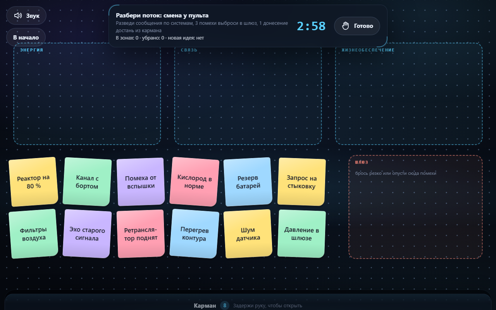
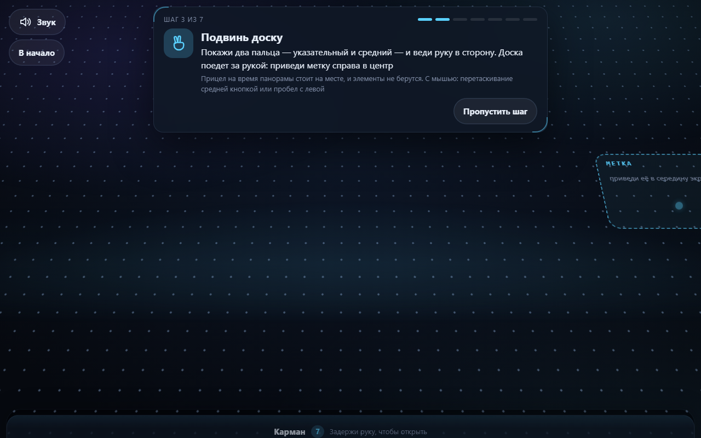

Пульт, до которого не нужно дотягиваться: доской для брейншторма управляют руками через веб-камеру. Открывается по ссылке в браузере — ничего не ставить, ничего не подключать, никаких ключей и никакого сервера.

Мышь недоступна не потому, что жесты моднее, а потому что её физически нет под рукой. Тач-панель на большой экран стоит денег, камера уже встроена в любой ноутбук и стоит ноль.
Это работа стоя и в движении, с крупными объектами: точность попадания в пиксель не нужна, размах руки естественен. Мы оптимизируем не число жестов, а сколько минут системой можно пользоваться, не устав.
Не зависят от того, где рука в кадре, как повёрнута и как далеко. Классификатору не приходится учить одну позу во всех положениях.
На одних и тех же данных: 94.9 % против 43.2 % точности, ложные действия на бездействии 11.4 % против 71.4 %. Правила щипок не видят вообще — recall 0 %.
Опустить руку и отдохнуть — не выход из приложения. В системах на правилах расслабленная рука неизбежно попадает в какой-нибудь жест.
Кадр ниже порога занимает место в окне, но не голосует ни за кого: отсутствие показаний не превращается в показание в пользу покоя.
| Жест | Действие |
|---|---|
| Кулак | взять элемент; дальше он прилипает к руке в любой позе |
| Кулак → ладонь | положить. На резком махе — выбросить |
| Два пальца | панорама: доска едет за рукой |
| Щипок вверх-вниз | масштаб вокруг точки, где щипок сомкнулся |
| Указательный + задержка | кнопка на плашке; на стикере — диктовка голосом |
| Ладонь над карманом | карман открывается, кулаком достают заготовку |
| Рука в покое | ничего: курсор на паузе, можно отдохнуть |
45 кодов, таблица целиком в README.
Условие должно продержаться заданное время, один код повторяется не чаще раза в 3 секунды. Мигающая подсказка хуже отсутствующей.
Сначала то, что делает недостоверными остальные измерения. Нет руки → мерить нечего. Плохо видно → не верим ничему. Рука у края → точки обрезаны, и расстояние там считать нельзя.
Она сбивает посреди работы, поэтому у каждого условия есть своя выдержка.
| Что | Зачем |
|---|---|
| Масштаб одной рукой — щипком | вторая рука больше не нужна: рука устаёт меньше |
| Панорама двумя пальцами | доску стало можно двигать, не беря ничего в руку |
| Липкий перенос | раскрытая ладонь больше не роняет элемент: кладёт только щелчок |
| Объём сцены | плоскость доски наклонена на 26°, дальний край уходит к горизонту |
| Обучение из семи заданий | у каждого нового жеста своё задание: жест без задания не находят |
| Подсказки на тупики жестов | жест показан верно, а доска стоит — снаружи это неотличимо от поломки |
Масштаб не может быть меткой: kNN отвечает одной меткой на кадр, а масштаб непрерывен. Поэтому поза только открывает сеанс, а величину даёт геометрия — сомкнул щипок и ведёшь руку вверх, как зум одним пальцем в картах.
Ход вверх и ход вниз на одно расстояние дают взаимно обратные масштабы, и доска возвращается ровно туда, где была. Это проверяемое свойство, и на него есть тест.
Берёт только кулак, щипок не берёт ничего. Замер на отложенной записи: кулак и щипок не обменялись ни одним кадром — ошибки щипка уходят только в бездействие, то есть в «не понял», а не в «взял не то».
Первый кадр щипка только ставит точку отсчёта — иначе путь, пройденный, пока голосование набирало свои 4 кадра, влетел бы в масштаб скачком. И кадр, где сырая поза уже не щипок, не меняет ничего: смена формы кисти сама сдвигает центр ладони.
Панорама и зум были в сборке раньше, чем появились шаги обучения, — и в задании про перенос стикера они не встречаются ни разу. Теперь у каждого свой шаг, и шаг кончается не по времени, а по сделанному делу.
Метка у правого края: видно, что она есть, и видно, что до центра её надо довезти.
Подпись на табличке набрана семью пикселями и в масштабе 1 физически не читается. Шаг засчитывается и цифрой масштаба, и глазами.

Playwright проходит весь путь на эмуляторе жестов мышью и на записанном видео руки, поданном как фейковая веб-камера Chrome.
Доска с 50 элементами под непрерывной панорамой и зумом. Так нашлась просадка теней: размытие на каждом элементе давало 41 FPS, градиент только под поднятым — 57.
Архитектура готова: источник точек отделён контрактом событий, а `numPoses` даёт несколько человек в кадре. Упирается в FPS при двух детекторах на кадр — и это измеримо, а не предположение.
Фронтальная камера, вертикальный layout: экран тот же, источник ввода тот же.
Контракт событий один, источник ввода подменяем — второй участник подключается как ещё один источник, а не как переписанный продукт.
Страница записи датасета уже в репозитории: четыре минуты записи и одна команда переобучают жесты под другого человека.
Доска для брейншторма, которой управляют руками перед камерой. Открывается по ссылке в браузере.